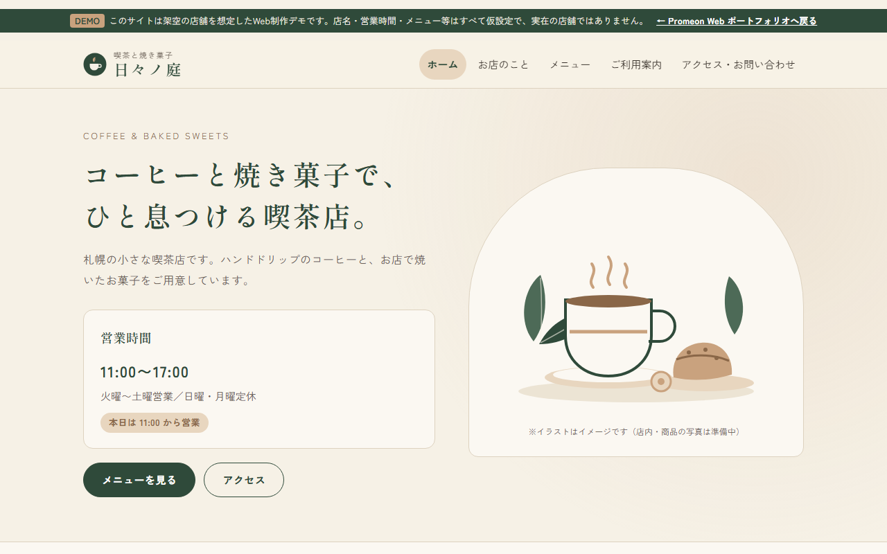
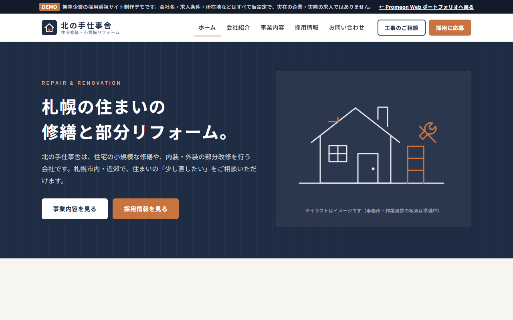
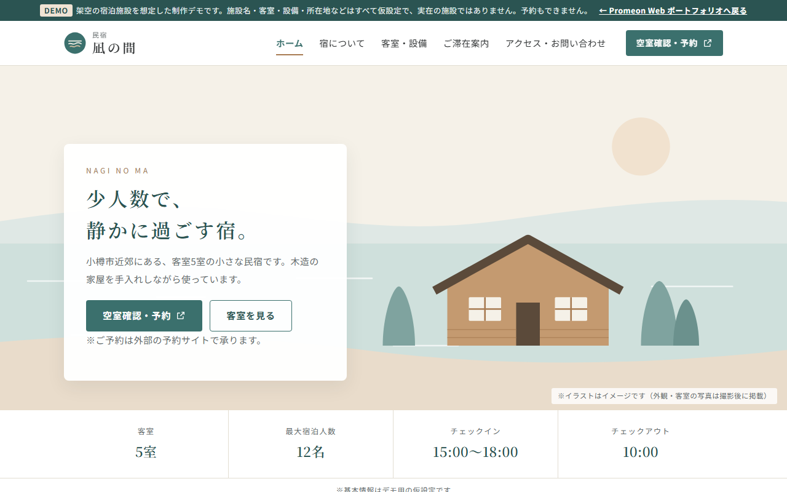

Portfolio
見やすく、伝わる
ホームページをつくります。
Promeon Web の制作サンプル集です。各サンプルをクリックすると、実際に操作できるサイトをご覧いただけます。スマートフォンでの表示もお試しください。
Works
制作サンプル

架空店舗デモ喫茶と焼き菓子「日々ノ庭」
札幌の小さな喫茶店を想定したデモサイト。営業時間・メニュー・アクセスをスマホですぐ確認できる構成にし、生成りと深い緑で落ち着いた雰囲気にまとめました。
サイトを見る →
架空企業デモ北の手仕事舎（採用重視の企業サイト）
札幌の住宅修繕会社を想定した、採用重視の企業サイトのデモ。企業サイトとしての役割を保ちつつ、採用ページに仕事内容・1日の流れ・募集要項・応募フォームをまとめました。工事の相談と採用応募は入口を分けています。
サイトを見る →
架空施設デモ民宿「凪の間」
小樽市近郊の小さな民宿を想定したデモサイト。客室ごとに写真・定員・寝具・設備を確認でき、比較表で違いも比べられます。予約は外部の予約サイトに任せ、「空室確認・予約」ボタンをどのページからも押せるようにしました。
サイトを見る →※「架空店舗デモ」「架空企業デモ」「架空施設デモ」は、ポートフォリオ用に架空の店舗・会社を想定して制作したサンプルです。実在の店舗・企業の制作実績ではなく、掲載している求人も実際の募集ではありません。
Service
サービス内容
5ページのホームページ制作
35,000円
- ページ構成
- トップ／会社・店舗紹介／事業・サービス・商品／目的に合わせたページ／お問い合わせ・アクセス
- 含まれる内容
- スマートフォン対応、ご希望に合わせたデザイン、控えめな動き、お問い合わせフォーム、修正3回まで
- 納品物
- ホームページデータ一式、公開手順マニュアル
- オプション
- NEWS／ブログ機能、SNSリンク追加、継続管理など（ご相談ください）
- 含まれない内容
- ドメイン取得、サーバー契約、公開設定の代行